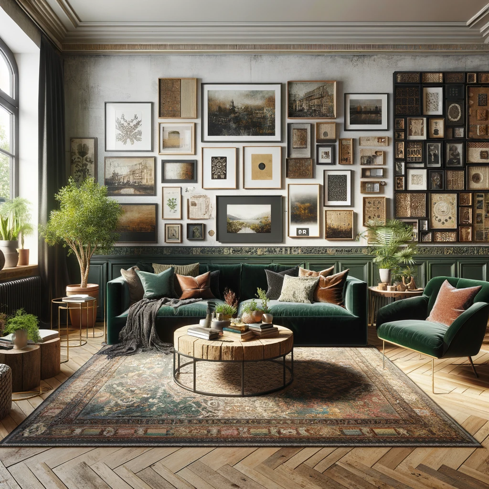
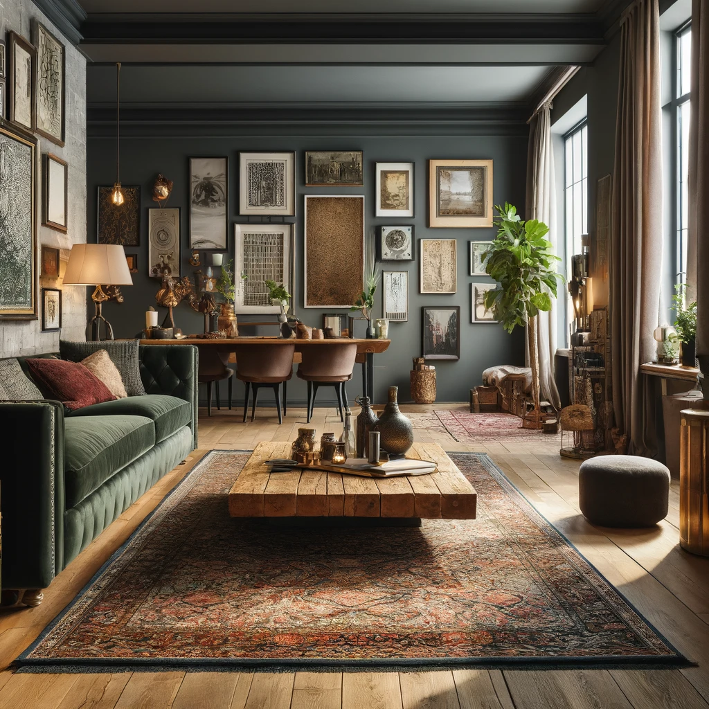

This project showcases a modern living room with a mix of eclectic and vintage elements. The design features a cozy seating area with a dark green velvet sofa, a coffee table made of reclaimed wood, and a large area rug with intricate patterns. The gallery wall is filled with framed artwork and photographs, adding a personal touch to the space. Natural light from large windows highlights the rich textures and colors, while plants and decorative accessories add warmth and greenery.
The dark green velvet sofa is the centerpiece of the room, offering both comfort and style. The reclaimed wood coffee table adds a rustic charm, perfectly complementing the vintage elements in the room.
The gallery wall is a curated collection of artwork and photographs, creating a focal point that reflects the client's personality and interests. The large windows allow natural light to flood the room, enhancing the vibrant colors and textures.